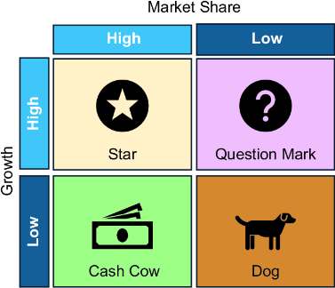
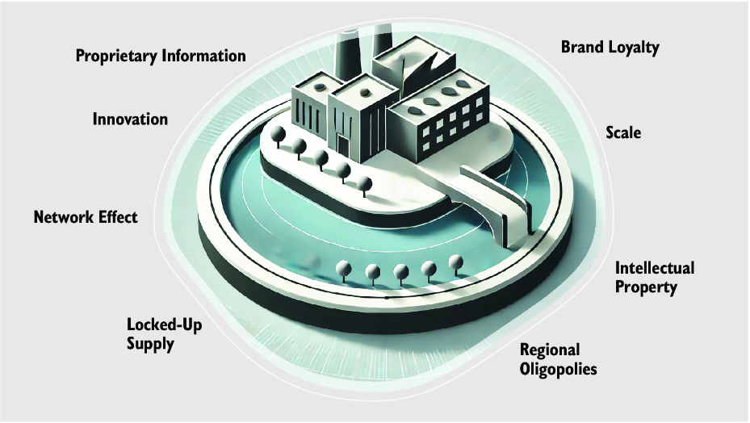
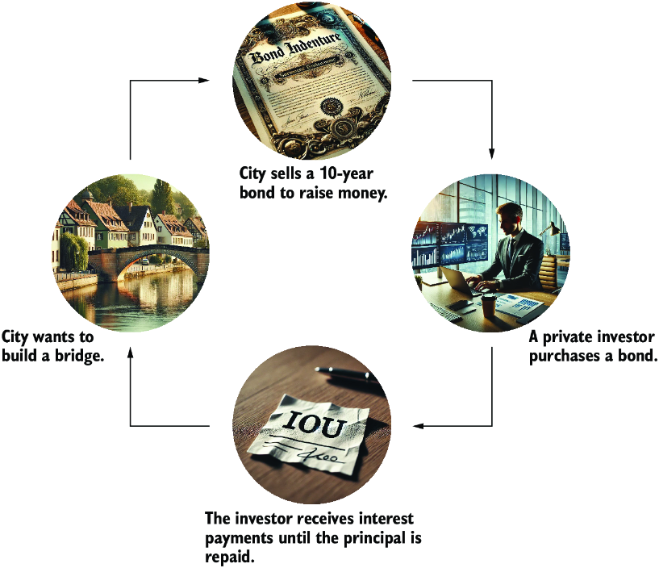
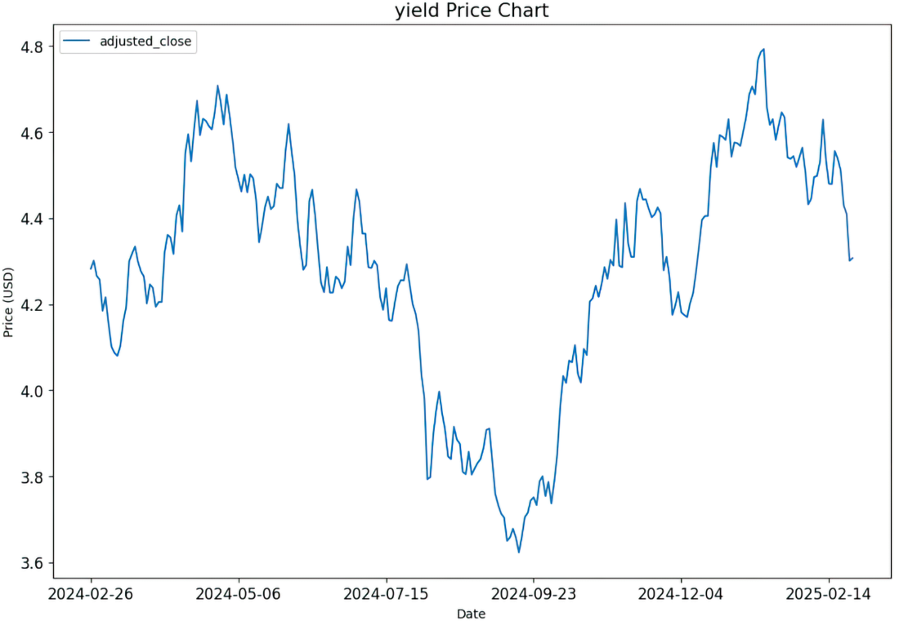
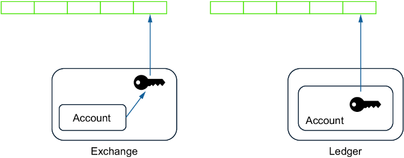

Chapter 4 explored how identifying outliers can give you an edge in beating the market. We use these techniques to identify undervalued stocks (value investing) or look for companies with new technologies or business models that will outperform others (growth investing). This approach, however, also means settling for delayed gratification. We might have to wait years until our shares have gained enough capital appreciation to sell them again for enough profit.
For many who have experienced challenging jobs or projects, just seeing the rewards of investment portfolios on a cash account and mapping them with existing recurring expenses triggers a strong feeling of freedom and assurance. The more you rely on your salary, the more permanent your job feels. The moment you stop needing it, every job feels temporary.
This chapter will focus on passive income—investments with recurring payouts. While the previous chapter focused exclusively on stocks, this chapter will also explore two other asset types: bonds and cryptocurrency. Let’s begin by examining how to maximize recurring payments through stock dividends.
Note Fixed income refers to an investment that pays the investor a fixed amount on a fixed schedule. However, many typical fixed-income investments have variants where we get varying payments on a fixed schedule (e.g., bonds with a floating rate or crypto staking rewards). For that reason, the term passive income is broader as it considers these fluctuations.
A dividend is a portion of a company’s profit that is paid to its shareholders. To understand the purpose of dividends, let’s consider how companies evolve after they are incorporated.
In their early stages, companies focus on growth and establishing a foothold in their markets. Revenue is reinvested into expansion, whether by hiring new employees, developing improved products or services, or increasing operational capacity. During this phase, companies typically don’t pay dividends. Instead, shareholders of startups benefit primarily from the potential for exponential growth—the transformation of a small garage-based enterprise into a thriving, steady business. Investing in these evolving companies often follows the high-risk, high-reward principle.
As a company matures and establishes itself in the market, its growth rate slows. At this stage, companies generate consistent profits, and investing all of their earnings in an even more aggressive campaign to grow further would no longer pay off, as they have already established themselves as leaders in the most profitable markets. Instead, this stability allows them to pay a portion of their profits to shareholders as dividends, making them attractive to investors seeking passive income. Mature companies paying regular dividends often represent lower-risk investment opportunities.

This lifecycle of company evolution aligns with the Boston Consulting Group (BCG) Growth-Share Matrix. As illustrated in figure 5.1, the ideal dividend-paying stock is a “cash cow”—a business that generates stable profits with minimal reinvestment requirements, allowing surplus funds to be distributed to shareholders.
We must first clarify our criteria for using data to identify dividend stocks. It’s not just larger companies with higher market capitalizations that are more likely to pay dividends; the type of industry also plays a crucial role. For example, companies in the utilities sector tend to pay higher dividends than those in the technology industry. Consider a utility company that supplies water or electricity to homes. Their business model is stable and supported by extensive infrastructure, such as pipelines and cables. This infrastructure acts as an economic moat—a competitive advantage that makes it difficult for rivals to encroach on their market share. At the same time, these companies face challenges in driving competitors out of other regions, as those rivals possess similar infrastructure elsewhere.
While the risks of losses are minimized in such industries, the growth potential is also limited. Figure 5.2 outlines examples of economic moats, highlighting how a long profit history in a saturated market and minimal competitive threats create the perfect conditions for a stable, dividend-paying company.

Conversely, most tech companies must continuously invest in R&D to stay in business and find the next big thing in the market. Apple, Microsoft, NVIDIA, and other major tech firms would cease to thrive if they stopped investing in research or acquiring innovative startups that bring new products and ideas to them. For these companies, it makes sense to keep dividend payments small to allocate more funds toward innovation and research initiatives.
One reference example of a dividend stock is the Coca-Cola Company. Its economic moat is its brand recognition. Supermarkets and restaurants are unlikely to remove Coca-Cola from their shelves or menus, making it hard to imagine the company’s cash flow running dry.
However, detecting long-term cash flow risks is essential. Take the tobacco industry as an example. Many tobacco companies pay excellent dividends, but as an investor, you must decide what future you foresee for them. Some argue that tobacco products are in decline and that the industry will face severe challenges when the percentage of smokers in the population becomes negligible. Others believe these companies will successfully transform to provide alternative products with better prospects than traditional cigarettes. Regardless of your belief, investing in companies within an industry without confidence in their long-term success is unwise.
In chapter 2, we partially covered dividend metrics and ratios, but now we need to go deeper. Applying the algorithm becomes trivial if we know what to look for. The following parameters can be essential for finding suitable dividend investments:
The script in listing 5.1 calculates the dividend growth per year. To do this, we calculate the sum of dividends paid in the first and last year, and then we can determine the average yearly increase. Next, we calculate the payouts per year by counting the frequency of dividend payments and deducting the payment frequency.
def calc_div_growth_rate (stock):
try:
dividends = stock.dividends
if dividends.empty:
return None, None
dividends_by_year = dividends.resample('YE').sum() #1
if len(dividends_by_year) > 1: #2
first_year = dividends_by_year.index[0].year #2
last_year = dividends_by_year.index[-1].year #2
first_dividend = dividends_by_year.iloc[0] #2
last_dividend = dividends_by_year.iloc[-1] #2
num_years = last_year - first_year #2
cagr = ((last_dividend / first_dividend) #2
** (1 / num_years)) - 1 #2
else: #2
cagr = None
payouts_per_year = dividends.resample('YE').
count().mean() #3
if payouts_per_year > 3.5: #3
payout_frequency = "Quarterly" #3
elif payouts_per_year > 1.5: #3
payout_frequency = "Semi-Annual" #3
elif payouts_per_year > 0.5: #3
payout_frequency = "Annual" #3
else: #3
payout_frequency = "Irregular"
return cagr, payout_frequency
except Exception as e:
print(f"Error processing {stock}: {e}")
return None, None
Executing listing 5.2 loads companies from the S&P 500 index and extracts their dividend metrics. As the results of executing the code will vary depending on the execution time, we’ll look at some results we got during the execution while writing this book.
In the second method, we collect ticker data through the tickers and filter by dividend-paying companies and those whose market cap exceeds a minimum threshold. This threshold is passed to the function as a parameter.
import requests
import pandas as pd
import yfinance as yf
from io import StringIO
def get_sp500_tickers():
url = "https://en.wikipedia.org/wiki/"
"List_of_S%26P_500_companies" #1
response = requests.get(url) #1
tables = pd.read_html(StringIO(response.text)) #1
sp500_table = tables[0] #1
return sp500_table["Symbol"].tolist() #1
def get_stocks_with_dividends_and_high_market_cap\
(tickers, market_cap_threshold):
data = []
for ticker in tickers: #2
try:
stock = yf.Ticker(ticker) #2
info = stock.info #2
if info.get("dividendYield") and
info.get("marketCap") >= market_cap_threshold:
cagr, payout_frequency = (
calc_div_growth_rate(stock)) #3
data.append({
"Ticker": ticker, #3
"Name": info.get("longName", "N/A"), #3
"Market Cap": info.get("marketCap"), #3
"Dividend Yield": info.
get("dividendYield"), #3
"Sector": info.get("sector", "N/A"), #3
"payoutRatio": info.
get("payoutRatio", "N/A"), #3
"dividendRate": info.
get("dividendRate", "N/A"), #3
"cagr": cagr, #3
"payout_frequency": payout_frequency, #3
})
except Exception as e:
print(f"Error processing {ticker}: {e}")
return pd.DataFrame(data)
Running this code, we can review various companies in the DataFrame and form investment theses. Let’s look at some outliers. Thermo Fisher Scientific (TMO) has a low payout ratio—at the time of writing, it’s 7.09%. At the same time, dividend payments have grown for some years. Therefore, an investor could assess this company now based on the theory that TMO has a lot of room to grow if we compare the payout ratios to those of other companies. An investor who believes in the long-term business model of TMO could see an investment in this company as a long-term investment.
We can also examine another company from our DataFrame, Exxon Mobil (XOM). At the time of writing, Exxon has a high dividend yield (3.70%), and its dividend payments have grown over the years. A dividend investor might consider buying Exxon with the idea that this company will keep growing, and, at the same time, the investors will harvest solid dividend payments from the start that can grow above bond yields, which we’ll look at next.
If you own a share of a company, you can brag at parties that it’s partly yours. However, those who are literate about investing won’t be impressed with your ownership of Apple, NVIDIA, or any other company unless your portfolio has beaten the market and you can be considered a master of capital appreciation.
While dealing with stocks involves equity, the bond business model relates to debt. In other words, bonds follow an IOU model: you lend money to someone, and the borrower pays interest until they return the borrowed money in full. The basic principle of bonds is outlined in figure 5.3.

Many attributes define a bond’s details, also called the indenture. Let’s look at the particulars affecting how you can lend money and benefit from that:
In its simplest form, a vanilla bond is an IOU with fixed coupon payment intervals and a set maturation date. However, there are many variations. For instance, some bonds allow borrowers to repay the principal in intervals alongside coupon payments, similar to how mortgage payments work. Bonds can also be collateralized, meaning that if the borrower defaults, an asset can be liquidated to repay the lender. This is akin to real estate foreclosures, where a property is seized if the owner can’t keep up with payments.
While this book focuses on basic scenarios, it’s worth noting that more complex variations of bonds are the subject of advanced certifications, such as the Chartered Financial Analyst (CFA). The job of a rating agency is to evaluate bonds offered on the bond market and to rate them. The higher the risk, the higher the returns an issuer offers to attract possible lenders. Table 5.1 shows the rating categories of the three big rating agencies in the United States.
|
Rating tier
|
Moody’s
|
S&P
|
Fitch
|
Meaning
|
|---|---|---|---|---|
| Investment Grade |
||||
| Highest quality |
Aaa |
AAA |
AAA |
Prime credit quality, lowest risk |
| High quality |
Aa1, Aa2, Aa3 |
AA+, AA, AA- |
AA+, AA, AA- |
Very high credit quality |
| Upper medium grade |
A1, A2, A3 |
A+, A, A- |
A+, A, A- |
Strong capacity to meet financial commitments |
| Lower medium grade |
Baa1, Baa2, Baa3 |
BBB+, BBB, BBB- |
BBB+, BBB, BBB- |
Adequate capacity, some susceptibility to conditions |
| Speculative grade |
||||
| Upper speculative |
Ba, Ba, Ba3 |
BB+, BB, BB- |
BB+, BB, BB- |
Higher risk of default, but financial commitment met |
| Highly speculative |
B1, B2, B3 |
B+, B, B- |
B+, B, B- |
Material default risk, but financial obligations still met |
| Substantial risk |
Caa1, Caa2, Caa3 |
CCC+, CCC, CCC- |
CCC+, CCC, CCC- |
Very high risk, substantial vulnerability to default |
| Near default |
Ca |
CC, C |
CC, C |
Highly vulnerable to default |
| Default |
C |
D |
RD, D |
In default |
Chapter 1 highlights two standard ways to earn money through investment: passive income and capital appreciation. As shown with bonds, coupon payments generate passive income. Bonds also offer the potential for capital appreciation. When issued, investors buy them on the primary market, where financial institutions act as intermediaries between the borrower and lender, setting an initial price (known as the face value or par value). Before the maturation date, bonds can be traded on the secondary market, where their price fluctuates. If the price rises above the face value, the bond trades above par; if it falls below, it trades below par. Buying a bond at a 5% discount to its face value means that 5% contributes to your yield upon maturity when the principal is repaid.
Let’s explore fixed-income assets from the US Treasury as a reference example. Depending on their durations, they are categorized as Treasury bills (maturing in up to one year), Treasury notes (maturing in up to 10 years), or Treasury bonds (maturing in more than 10 years). For further details, see https://mng.bz/lZPR.
Data can help identify bonds with projected yields higher than alternative investments. The Federal Reserve’s interest rate policies directly influence bond prices and yields. When the Fed raises rates, new bonds are issued with higher yields to match prevailing rates, making existing bonds with lower yields less attractive and causing their prices to drop. Conversely, when the Fed lowers rates, existing bonds with higher yields become more appealing. Additionally, high interest rates increase default risks for weaker borrowers. Understanding interest rate trends is crucial when deciding between investing in stocks or bonds. The following code demonstrates how to collect bond interest rates using the EODHD platform introduced in chapter 3:
import requests
def fetch(country_code):
url =
f’https://eodhd.com/api/eod/{country_code}.GBOND?api_token={eod_api_key}
&fmt=json’
return requests.get(url).json()
import pandas as pd
us = pd.DataFrame(data=fetch("US10Y"))
We can now plot the results and explore the outcome. Looking at the rates when plotting the graph, we can reason that investing in a bond would have been a better decision than in previous times, as shown in figure 5.4:

import matplotlib.pyplot as plt
p = us[["date", "adjusted_close"]]
p.set_index("date", inplace=True)
p.plot(figsize = (12,8), fontsize = 12)
plt.ylabel("Price (USD)")
plt.title("yield Price Chart", fontsize = 15)
plt.show()
Alternatively, we can analyze high-risk bonds, often referred to as junk bonds, and use data to determine if some are undervalued relative to their ratings. Unfortunately, the free EODHD version is limited and doesn’t provide corporate data. The following code uses an alternative open platform to load data from an International Securities Identification Number (ISIN), a bond identifier. The REST API returns the metadata for the bond based on the input:
import requests
headers = {
“Content-Type”: “application/json”,
“X-OPENFIGI-APIKEY”: OPEN_FIGI_KEY
}
isin = "US36166NAJ28" # Example ISIN
data = [{"idType": "ID_ISIN", "idValue": isin}]
response = requests.post("https://api.openfigi.com/v3/mapping",
headers=headers, json=data)
print(response.json())
This approach is highly speculative and may require insider knowledge. Another speculative tool is the credit default swap (CDS), which some readers may recognize from the movie The Big Short. A CDS acts as an insurance contract against bond default: you pay an ongoing premium, and if the debtor defaults, the insurer compensates you for the bond’s full value. Interestingly, CDS can be detached from the original lender. For example, if A borrows money from B, C can purchase an insurance from D that is paid to C when B defaults.
Michael Burry famously used data to predict the 2007 financial crisis, betting on the defaults of various collateralized debt obligations (CDOs)—packages of bundled bonds. His foresight proved correct, showcasing how deep data analysis can uncover opportunities and risks.
While these advanced strategies offer potential, they are complex and risky. For simplicity, bonds can still provide steady yields with lower risk than stocks. Data can help determine whether dividend-paying stocks or bonds are better suited for passive income. Next, we explore a third passive income option: cryptocurrency.
Most individuals who accumulated significant wealth through cryptocurrency did so via capital appreciation. They invested in cryptocurrency at low prices during its nascent stages or after one of its crashes and reaped substantial gains as its value soared. Crypto enthusiasts argue that cryptocurrencies, with a few exceptions, have a constant capital appreciation as a scarce resource. As there can never be more than 21 million BTC, the idea is that the value of Bitcoin will always increase. Consequently, if you believe in the long-term value of crypto, there isn’t much more to say, as all you need to do is wait for the right time to sell.
This chapter focuses on strategies to generate passive income with cryptocurrency, as there is still much to learn. But before that, we need to recap some crypto basics to be able to invest.
One thing enthusiasts and critics may agree on is the number of scams and the potential risks of losing money with crypto if you don’t know what you’re doing. Even if we don’t go into speculative actions in this book, exploring some risk management basics is necessary.
Warning Knowledge of cryptocurrency reduces your risk of being a victim of fraud or scam. However, the cryptocurrency industry is highly unregulated, and even experienced crypto traders have lost considerable amounts of money. Cryptocurrency is likely to remain a risky investment.
The term “lost cryptocurrencies,” as used by the media, can lead to misconceptions because cryptocurrencies can’t be lost. However, crypto holders can lose their keys, confirming their cryptocurrency ownership. We’ll explain this in detail by illustrating how cryptocurrency works, as depicted in figure 5.5.

In its simplest technical terms, blockchain is all about private keys that sign blocks of an immutable, distributed transaction log during a transaction. Cryptocurrency monetizes this principle. The more blocks are signed with your key, the more ownership you have.
We can use accounts on exchanges, such as Binance or OKX. For investors working with brokers, using an exchange seems like having a brokerage account from a bird’s-eye view. Exchanges invest to ensure that your account on their platform is as safe as possible from attacks by hackers. They will encourage—or even enforce—all kinds of account protection mechanisms, such as multifactor authentication. Their user interfaces are user-friendly, aiming to make it easy to buy and sell cryptocurrency.
However, we need to go into more detail to understand the problems many investors see with an exchange. Exchanges enable you to trigger transactions using your user account; however, the exchanges sign the transaction with their keys, which is the source of the slogan “Not your keys, not your coins.” Most cryptocurrency exchanges reside in countries where it’s difficult to regulate them. The risks of this lack of regulation have become apparent with the FTX scandal, in which the company misused the investments of private investors, and its principal founder, Sam Bankman-Fried, became a symbol of crypto fraud.
To completely control your crypto investments, you need to be in control of the keys that are used for transactions. You can store your keys on your physical devices (a hardware ledger or cold wallet) or on software service providers who provide you with the keys (a software ledger or warm wallet). The concept is the same: crypto transactions are signed, but in the case of a ledger, transactions are signed with your key. You still need to protect your keys, but you’ve vastly reduced your exposure to market risks (namely, that the value of your cryptocurrency might go down) and cyberattacks on the blockchain.
Crypto user forums are flooded with offers on how to get rich with crypto, and many scams lure people into highly speculative and risky ways to make money. Mining and staking are two forms of passive income that can also appeal to risk-aware investors. Let’s explore these two options.
Mining involves using computational power to validate transactions on a blockchain network. This approach is also called a Proof-of-Work (PoW) consensus mechanism. If the machines in your mining farms solve a complex mathematical problem, you receive some cryptocurrency. While it can be lucrative, mining requires significant up-front investment in hardware and incurs ongoing electricity costs. The profitability depends on factors such as the cryptocurrency mined, mining difficulty, and local electricity rates.
Staking allows crypto holders to lock up their assets in a blockchain network to support its operations, such as validating transactions. In return, stakers earn rewards, often as additional tokens. This method, also called the Proof-of-Stake (PoS) consensus mechanism, is energy-efficient compared to mining using the previously mentioned PoW mechanism. However, it requires holding a certain minimum amount of cryptocurrency. It involves the risk of token devaluation, which can be roughly compared with inflation: the more tokens are created, the more the worth of existing tokens will be reduced.
Becoming a crypto entrepreneur may sound appealing to engineers. After all, they can use their core strengths to build a moneymaking business. However, in many cases, a substantial up-front investment is needed. Without investment in strong hardware, there’s no mining, and mining is still expensive if your hardware is in a region with high electricity prices. Staking can also be costly, but there are still some forms in which you can create revenue while you hold your cryptocurrency for the long term. Let’s look at these options.
Staking and validation mean your cryptocurrency is used to validate network transactions with a PoS consensus mechanism. A validator node is a computer on the internet representing existing cryptocurrency stakeholders. During a transaction, validators are chosen randomly, based on stake size or other factors. Validators confirm transactions, propose blocks, and add them to the blockchain. For this service, validators earn rewards in the form of a minimal share of the transaction.
In this process, individual investors can generate passive income with cryptocurrency. They can set up a validator node to validate transactions. Being in control of a validator often means a significant investment. To provide a validator for Ethereum, you need to stake at least 32 ETH (https://ethereum.org/en/staking/). This is a substantial up-front investment. If ETH is priced above $3,000, the initial investment exceeds $100,000.
The easier alternative is to delegate your cryptocurrency to a third-party validator. The validator will provide you with rewards but will take a commission, reducing your rewards compared to running your node; this approach avoids the substantial time and financial commitments of setting up and maintaining validator hardware and software. Hardware ledgers typically offer software to manage positions, such as Ledger Live or Trezor Suite. To stake your cryptocurrency on a hardware ledger, simply follow the instructions as shown in the supplier’s software to manage your crypto investments. Please be aware that cryptocurrency is largely unregulated, and there are fraud risks when you stake coins.
So, how much can you earn through staking? One challenge is that staking rewards vary significantly depending on transaction value. It differs from interest payments of bonds, where there are constant interest payments. Table 5.2. shows average staking rewards over time.
|
Cryptocurrency
|
Average staking rewards (APY) in %
|
|---|---|
| Ethereum (ETH) |
4–6 |
| Cardano (ADA) |
4–6 |
| Solana (SOL) |
6–8 |
| Polkadot (DOT) |
~14 |
| Avalanche (AVAX) |
8–12 |
Chapter 6 will show how to access your assets—stocks, ETFs, bonds, and crypto—through a Python API. One specific challenge with using cold wallets is that they are designed to limit access to protect you from hackers. Providing Python APIs to access information related to cryptocurrency isn’t the primary use case for a hardware ledger provider. Therefore, we’ll explain how to access Binance, although we want to emphasize that many crypto investors advise against using exchanges to hold cryptocurrency.
Note As staking means providing cryptocurrencies for transactions, they can also be locked for specific periods. Keep that in mind if you, in parallel, desire to make money using day trading.
We can approach financial independence in two ways. One way is to accumulate enough money to live off these reserves for the remainder of your life. For most, the more likely path is to create a high enough passive income stream. By knowing your total annual expenses, you can calculate the money needed for financial independence using a simple formula: divide your yearly costs by your expected return rate. While this formula ignores factors such as inflation and safety margin, a reasonable estimate for a low-risk yield is around 5%.
Note If you plan to retire through passive income by investing all of your money in an account that returns a 5% interest rate per year, which covers exactly your yearly expenses, please consider the inflation and other factors that may affect your spending. The average inflation rate in the United States from 1975 to 2024 was 3.5%.
Many financial advisors recommend adjusting your investment strategy with age. As you age, shifting toward assets that provide passive income becomes more common. This is partly because growth portfolios yield higher long-term returns than fixed-income investments. For example, the Vanguard S&P 500 ETF (VOO) has demonstrated a 10-year growth rate of 192.20% as of January 2025. Similarly, the iShares MSCI World ETF (URTH), which invests globally, achieved a return of 123.40% over the same period. Both outperform most high-fixed-income portfolios and offer dividends in addition to growth.
This underscores a timeless principle emphasized by value investors such as Charlie Munger and Warren Buffett: patience is one of the greatest virtues in investing. Through the power of compounding, those who adhere to sound principles and maintain a disciplined approach can achieve significant wealth over time.
Still, even if you’re the most patient person on earth, remember that there’s no universal investment strategy for everyone. If you consider retiring, whether at a younger or older age, projected long-term returns that have yet to materialize won’t pay your bills. In the worst-case scenario, growth assets with the potential for high returns might even evaporate. Even if you bet on stable companies, it’s a problem if you need money in a bear market and must sell at a lower price than in a bull market.